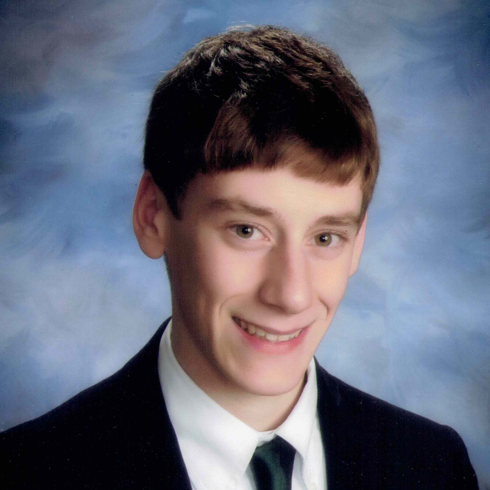
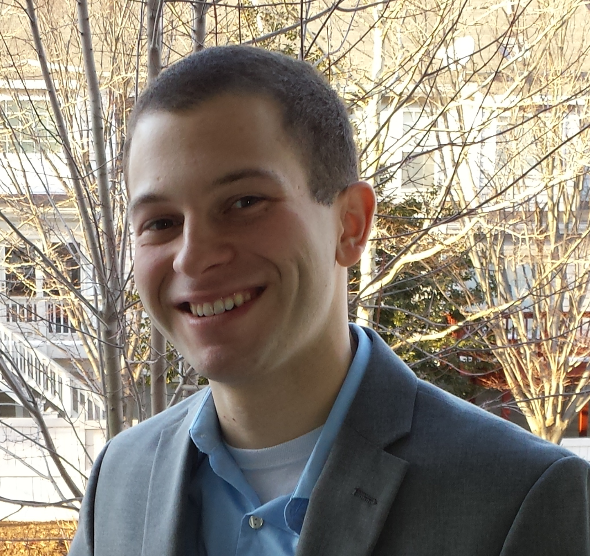
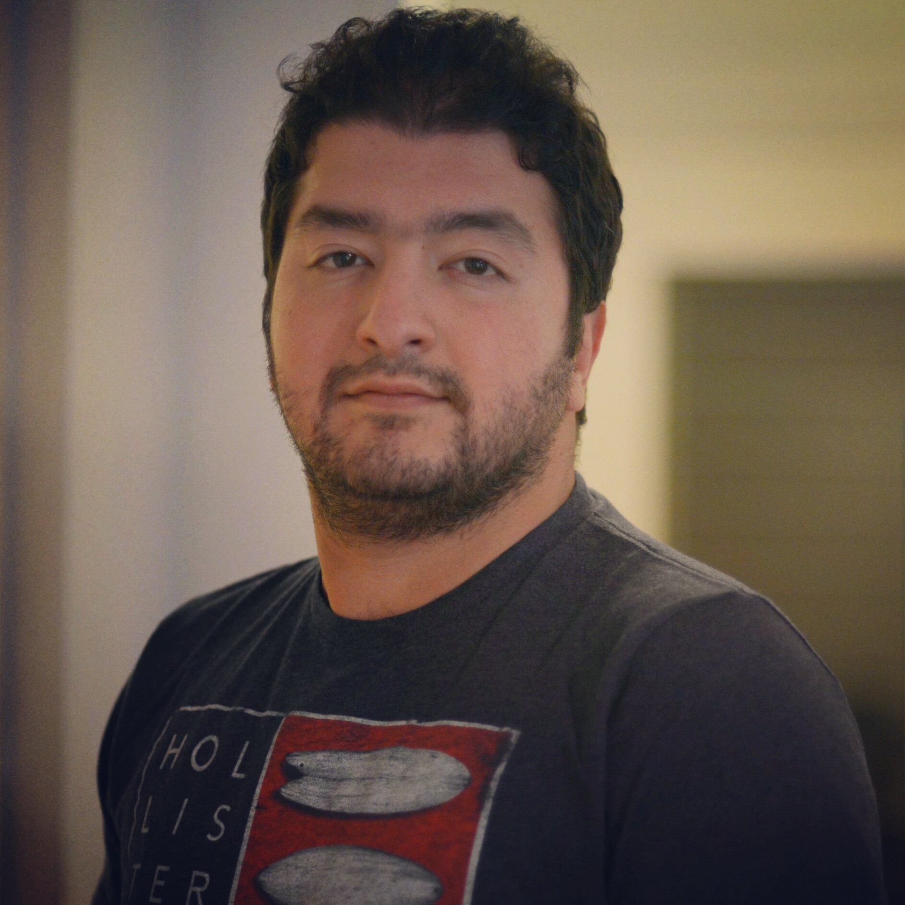
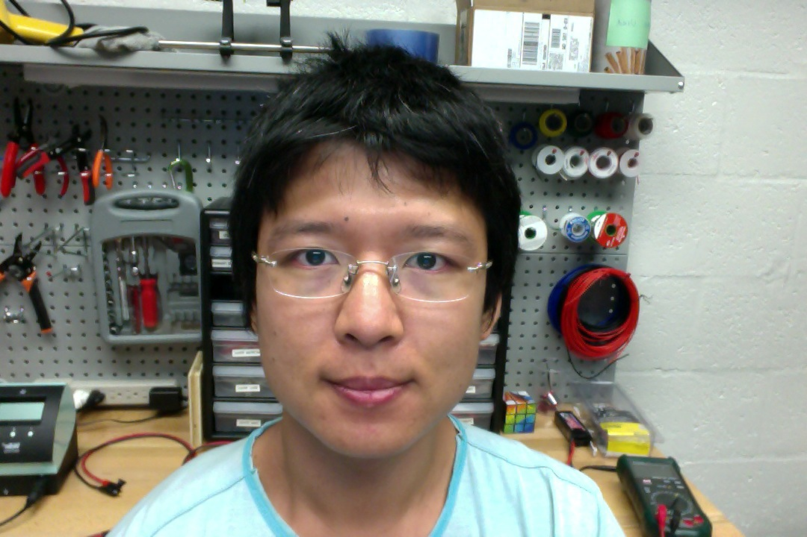

Current Students
Kuya Takami Ph.D. (postdoc, 2016-present)
Research
| Autonomous Aerial Exploration |
EDUCATION
| Ph.D. | Mechanical Engineering | Virginia Tech | Aug 2011 - Oct 2016 |
| Thesis: Non-Field-of-View Acoustic Target Estimation | |||
| Advisors: Professor Tomonari Furukawa | |||
| M.S. | Mechanical Engineering | University of Wisconsin - Madison | Aug 2009 - May 2011 |
| Advisors: Professor Scott Sanders | |||
| B.S. | Biomedical Engineering (Biomechanics) | University of Wisconsin - Madison | 2004 - 2008 |
PUBLICATIONS
-
K. Takami, H. Liu, T. Furukawa, M. Kumon, and G. Dissanayake, "Non-Field-of-View Sound Source Localization Using Diffraction and Reflection Signals," IEEE/RSJ International Conference on Intelligent Robots and Systems (IROS), 2016. (accepted)
-
K. Takami, H. Liu, T. Furukawa, M. Kumon, and G. Dissanayake, "Recursive Bayesian Estimation of NFOV Target Using Diffraction and Reflection Signals," ISIF International Conference on Information Fusion, 2016.
-
K. Takami, T. Furukawa, M. Kumon, D. Kimoto, and G. Dissanayake, "Estimation of a Nonvisible Field-of-View Mobile Target Incorporating Optical and Acoustic Sensors,'' Autonomous Robots, 2015.
-
K. Takami, T. Furukawa, M. Kumon, and G. Dissanayake, "Non-Field-of-View Acoustic Target Estimation in Complex Indoor Environment," Springer Tracts in Advanced Robotics, 2015.
-
K. Takami, T. Furukawa, M. Kumon, and L. Mak, "Non-Field-of-View Indoor Sound Source Localization based on Reflection and Diffraction," Multi-sensor Integration and Fusion, IEEE, 2015.
-
K. Takami, T. Furukawa, M. Kumon, and G. Dissanayake. "Non-Field-of-View Acoustic Target Estimation in Complex Indoor Environment," Field and Service Robotics, 2015.
-
T. Furukawa, K. Takami, X. Tong, D. Watman, A. Hamed, R. Ranasinghe and G. Dissayanake, "Map-based Navigation of an Autonomous Car Using Grid-based Scan-to-Map Matching," ASME IDETC, 2015.
-
K. Takami and T. Furukawa, "High-Resolution Deformation Measurement System for Fast Rotating Tire," ASME IDETC/CIE, 2015.
-
K. Takami and T. Furukawa, "High-Resolution Deformation Measurement System for Fast Rotating Tires Towards Noise Prediction," Precedings of EURONOISE, 2015.
-
M. Kumon, D. Kimoto, K. Takami and T. Furukawa, "Acoustic recursive Bayesian estimation for non-field-of-view targets," In Image Analysis for Multimedia Interactive Services (WIAMIS), IEEE, 2013.
-
M. Kumon, D. Kimoto, K. Takami and T. Furukawa. "Bayesian non-field-of-view target estimation incorporating an acoustic sensor," IEEE/RSJ International Conference on Intelligent Robots and Systems (IROS), 2013.
-
K. Takami, S. Taheri, M. Taheri and T. Furukawa, "Prediction of Railroad Track Foundation Defects Using Wavelets," Joint Rail Conference, ASME, 2013.
-
J. M. Whitney, K. Takami, S. T. Sanders, and Y. Okura, "Design of system for rugged, low-noise fiber-optic access to high-temperature, high-pressure environments," Sensors Journal, IEEE, 2011.
-
A. Xinliang, T. Kraetschmer, K. Takami, S. T. Sanders, L. Ma, et al, "Validation of temperature imaging by H$_2$O absorption spectroscopy using hyperspectral tomography in controlled experiments," Journal of Applied Optics, 2011.
HONORS & AWARDS
| ASME:IDETC/CIE Best Student Paper Award | 2015 |
| Pratt Graduate Fellowship | 2011,2012,2014 |
Kanishke Gamagedara (MS Student, 2016-present)
RESEARCH PROJECT
| Office of Naval Research | Ship air wake project | The George Washington University, DC | Jan 2016 - Present |
EDUCATION
| M.S. | Mechanical and Aerospace Engineering | The George Washington University, DC | Jan 2016 - Present |
| B.Sc. | Mechanical Engineering | University of Peradeniya | May 2010 - Oct 2014 |
PUBLICATIONS
- J.A.A.S. Somasiri, K.G.B. Gamagedara, D.H.S. Maithripala, and J.M. Berg, "Implementation of an Almost Globally Stable Intrinsic Nonlinear PID Controller for Attitude Stabilization of a Quadrotor", IEEE International Conference on Industrial and Information Systems, Devember 2015
HONORS & AWARDS
| University of Peradeniya, The Professor E.F. Bartholomeusz prize for the Best Final Year Project in Engineering Mathematics | 2014 |
| University of Peradeniya, The Professor E.F. Bartholomeusz Prize for the Best Third Year Project in Engineering Mathematics | 2013 |
Kalpesh Patil (MS Student, 2015-present)
RESEARCH PROJECT
| Office of Naval Research | Ship air wake project | George Washington University, U.S. | Sept 2015-Present |
EDUCATION
| M.S. | Mechanical and Aerospace Engineering | George Washington University, U.S. | August 2015-Present |
| B.E. | Mechanical Engineering | Fr. C. Rodrigues Institute of Technology, INDIA | August 2011-May 2015 |
CONFERENCE
- Kalpesh Patil & Gauri Thorat, " Numerical Simulation of Window Air Conditioner" in Proceedings of 2015 International Conference of Nascent Technologies of Engineering, Fr C. Rodrigues Institute of Technology, Vashi,India January 2015.
PUBLICATIONS
- Kalpesh Patil & Gauri Thorat, Numerical Simulation of Window Air Conditioner, International Journal of Engineering Research and Technology, pp 184-188, January 2015
- Kalpesh Patil, Gauri Thorat, Mathewlal T et al., Numerical Simulation of Window Air Conditioner, International Journal of Engineering Technology Science and Research, ISSN 2394 – 3386 Volume 2 Issue 9, September 2015
HONORS & AWARDS
| IIT Bombay Techfest 2015, Design & Fabrication of small-scale Remote controlled Nitro car
Awarded 1st Place (80+ Teams) |
January 2015 |
| Secretary,
Mechanical Engineering Students Association |
2013-14 |
| IIT Bombay Zephyr (Boeing) 2014, Boeing IIT National Aeromodelling Competition
Selected for National Level |
Feburary 2014 |
| IIT Bombay Techfest 2013, Hover-on: Design & Fabrication of small-scale Remote controlled Hovercraft
Awarded 3rd Place(50+ Teams) |
January 2013 |
| IIT Bombay Zephyr 2013,Impulse: Water rocket
Awarded 3rd position(60 + teams) |
Feburary 2014 |
| Aero 360 2013, Design your flight
Awarded 6th Place(40+ Teams) |
May 2013 |
Mahdis Bisheban (Ph.D Student, 2015-present)

Research
| Control of UAVs in a Wind field |
Education
| Ph.D. | Mechanical and Aerospace Engineering | The George Washington University | Aug 2015-Present |
| Advisor: Dr. Taeyoung Lee | |||
| M.S. | Mechanical Engineering | The University of Guilan | Sep 2009-May 2011 |
| Thesis: Pareto design of linear state feedback controllers using multi-objective adaptive particle swarm optimization | |||
| Advisors: Dr. Ahmad Bagheri, Dr. Nader Nariman-zadeh | |||
| B.S. | Mechanical Engineering (Fluid Mechanics and Heat Transfer) | The University of Guilan | Sep 2005-May 2009 |
| Senior Project: Study behavior of water network of Langroud using GIS | |||
| Advisor: Dr. Mohammad Naghash | |||
Publication
- M. J. Mahmoodabadi, M. Bisheban, "An online optimal linear state feedback controller based on MLS approximations and a novel straightforward PSO algorithm," Transactions of the Institute of Measurement and Control, 2014.
- M. J. Mahmoodabadi, A. Bagheri, S. A. Mostaghim, M. Bisheban, "Simulation of stability using Java application for Pareto design of controllers based on a new multi-objective particle swarm optimization,"
Mathematical and Computer Modelling, Vol. 54, No. 5. 2011, pp. 1584-1607.
- M. Bisheban, A. Bagheri, "Constrained optimization of an I-beam using game theory and modified particle swarm,"
20th Annual International Conference on Mechanical Engineering-ISME2012,16-18 May, 2012, Shiraz, Iran.
- M. bisheban, M.J. Mahmoodabadi, J. Rezapour, "Globally convergent sliding mode and feedback linearization controllers for trajectory tracking with bounded disturbance,"
the first regional conference of mechanical engineering, MCliau 2011, Azad University, Lauhijan, Iran.
HONORS & AWARDS
| GW Fellowship | 2014 |
| The award of Brilliant Talent in the University of Guilan | 2009 |
| The award of Talented Student in the University of Guilan | 2007,2008 |
Christoper Poole (Undergraduate Student, 2015-present)
Research
| Microcontroller (Arduino) Hardware/Software |
| C/C++ Programming |
| Robotic Systems Hardware |
Education
| B.S. | Mechanical Engineering, Concentration in Robotics | The George Washington University | Aug 2014-Present |
Publication
- S. Kulumani, C. Poole, and T. Lee. "Geometric Adaptive Control of Attitude Dynamics on SO(3)
with State Inequality Constraints, " in Proceedings of the American Control Conference, 2016, submitted.
HONORS & AWARDS
| 1st Place Experimental Research Award,
Geometric adaptive control of attitude dynamics on SO(3) with state inequality constraints
George Washington University, R&D Showcase |
2016 |
Shankar Kulumani (Ph.D Candidate: 2014-present)

Research
| Analytical Mechanics |
| Orbital Mechanics |
| Attitude Dynamics |
Education
| Ph.D. | Mechanical and Aerospace Engineering | George Washington University | Aug 2014-Present |
| M.S. | Aeronautical and Astronautical Engineering | Purdue University, IN | Jan 2011-Dec 2013 |
| B.S. | Astronautical Engineering | US Air Force Academy, CO | Jun 2005-May 2009 |
Publication
- S. Kulumani and T. Lee. "Systematic Design of Optimal Low-Thrust Transfers for the Three-body Problem,"
Acta Astronautica, submitted.
- S. Kulumani, C. Poole, and T. Lee. "Geometric Adaptive Control of Attitude Dynamics on SO(3)
with State Inequality Constraints, " in Proceedings of the American Control Conference, 2016, accepted.
- S. Kulumani, and T. Lee. "
Systematic Design of Optimal Low-Thrust Transfers for the three-body Problem, " in Proceedings of AAS/AIAA Astrodynamics Specialist Conference, Vail, CO, no. 757, Aug 2015.
- S. Kulumani and T. A. Lovell. "
Space based TDOA Geo-location, " in Proceedings of 2013 Space Control Conference, MIT/Lincoln Laboratories, May 2013.
Professional Experience
| Reserve USAF | Captain, Threat Systems Engineer, Missile and Space Intelligence Center Defense Intelligence Agency, Redstone Arsenal, AL |
Sep 2014-Present |
| Active USAF | Captain, Spacecraft Guidance Engineer, Guidance, Navigation and Control Group Air Force Research Lab, Kirtland AFB, NM |
Aug 2011-Jul 2014 |
| Active USAF | Lieutenant, Deputy Space Vehicles Lead, Space Development and Test Directorate Space and Missles Systems Center, Kirtland AFB, NM |
May 2009-Aug 2011 |
HONORS & AWARDS
| Hetherington Family Scholarship, George Washington University | 2016 |
| Travel Award, American Control Conference (ACC 2016), Boston, MA | 2016 |
| 1st Place Experimental Research Award, George Washington University, R&D Showcase | 2016 |
| Most Innovative/Creative Project, Society for Satellite Professional Internationals (SSPI) | 2015 |
| Graduate Research Fellowship, The George Washington University | 2014 |
Evan Kaufman (Ph.D Candidate: 2012-present)
Research
| Autonomous Exploration for SLAM |
| Geometric Nonlinear Controls |
| Fully-Actuated UAV Control and Applications |
| Optimal Estimation and Data Association |
Education
| Ph.D. | Mechanical & Aerospace Engineering | The George Washington University | Aug 2012-Present |
| Thesis: Path Planning and Geometric Controls of Multi-Agent Systems Exploring Unknown Environments | |||
| Advisor: Dr. Taeyoung Lee | |||
| B.S. | Department of Mechanical Engineering | Bucknell University | Aug 2008-May 2012 |
| Senior Project: Friction Loaded Shaft Design for a Model Hydrokinetic Turbine | |||
| Advisors: Dr. M. Laura Beninati, Dr. Charles Kim | |||
Publication
- E. Kaufman, T. Lee, and Z. Ai, "Autonomous Exploration by Expected Information Gain from Probabilistic Occupancy Grid Mapping," IEEE International Conference on Simulation, Modeling, and Programming for Autonomous Robots, December 2016, submitted.
- E. Kaufman, T. Lee, Z. Ai, and I. S. Moskowitz, "Bayesian Occupancy Grid Mapping via an Exact Inverse Sensor Model," Proceedings of the American Control Conference, Boston, July 2016, pp. 5709-5715.
- T. Wu, E. Kaufman, and T. Lee, "Globally Asymptotically Stable Attitude Observer on SO(3)," Proceedings of the 54th IEEE Conference on Decision and Control, 2015. pp. 2164-2168.
- E. Kaufman, T. A. Lovell, and T. Lee, "Nonlinear Observability Measure for Relative Orbit Determination with Angles-Only Measurements," ASME Journal of Dynamic Systems, The Journal of the Astronautical Sciences, 2016. Accepted for publication.
-
E. Kaufman, T. A. Lovell, and T. Lee, "Minimum Uncertainty JPDA Filters and Coalescence Avoidance for Multiple Object Tracking," The Journal of the Astronautical Sciences, 2016. In revision process.
- T. Wu, E. Kaufman, and T. Lee, "Globally Asymptotically Stable Attitude Observer on the Special Orthogonal Group," Automatica, 2016. In revision process.
-
E. Kaufman, T. A. Lovell, and T. Lee, "Nonlinear Observability Measure for Relative Orbit Determination with Angles-Only Measurements," Proceedings of the 25th AAS/AIAA Space Flight Mechanics Meeting, Williamsburg, VA, 2015. Paper 451.
-
E. Kaufman, T. A. Lovell, and T. Lee, "Minimum Uncertainty JPDA Filter and Coalescence Avoidance Performance Evaluations," Proceedings of the 25th AAS/AIAA Space Flight Mechanics Meeting, Williamsburg, VA, 2015. Paper 432.
-
E. Kaufman, K. Caldwell, D. Lee, and T. Lee, "Design and Development of a Free-Floating Hexrotor UAV for 6-DOF Maneuvers," Proceedings of the IEEE Aerospace Conference, 2014. Paper 2527.
-
E. Kaufman, T. A. Lovell, and T. Lee, "Optimal Joint Probabilistic Data Association Filter Avoiding Coalescence in Close Proximity," Proceedings of the European Control Conference, 2014. pp. 2709-2714.
HONORS & AWARDS
| Member of Golden Key International | 2015 |
| Graduate Research Fellowship | 2012 |
| Member of Tau Beta Pi Honor Society | 2011 |
Former Students
Dr. Tse-Huai Wu (Ph.D Student: 2013-2015)
RESEARCH
| Nonlinear control systems |
| Spacecraft attitude control |
EDUCATION
| Ph.D. | Mechanical & Aerospace Engineering | The George Washington University | 2013-present |
| M.S. | Mechanical & Aerospace Engineering | The George Washington University | 2011-2013 |
| Thesis: Spacecraft Relative Attitude Formation Tracking on SO(3) Based on Line-of-Sight Measurements | |||
| Committee: Taeyoung Lee (Advisor), James D. Lee, Michael Keidar | |||
| B.S. | Power Mechanical Engineering | National Tsing Hua University | 2004-2008 |
PUBLICATION
- T. Wu and T. Lee "Angular velocity observer on the special orthogonal group for velocity-free rigid-body
attitude tracking control" in Proceeding of the European Control Conference, 2015, accepted.
- T. Wu and T. Lee "Spacecraft attitude formation stabilization using
lines-of-sight without angular velocity measurements" Presented at the 25th AAS/AIAA Space Flight Mechanics Meeting, 2015, no. 441.
- T. Wu, B. Flewelling, F. Leve, and T. Lee "Spacecraft position and attitude formation control using
line-of-sight measurements" in Proceeding of the Conference on Decision and Control, 2014, pp. 970-975.
- T. Wu, B. Flewelling, F. Leve, and T. Lee "Spacecraft relative attitude formation tracking on SO(3) based on
line-of-sight measurements" in Proceeding of the American Control Conference, 2013, pp. 4820-4825.
- T. Wu, T. Lee, and M. Keidar, "Low-thrust attitude control for nano-satellite with micro-cathode thrusters" in Proceedings of the International Electric Propulsion Conference, 2013, No. 366.
HONORS & AWARDS
| 2nd place award, GW Research Days. | 2014 |
| 3rd place award, SSPI Engineering Student Competition at Space Systems. | 2013 |
| SEAS Fellowship, The George Washington University. | 2012-present |
Dr. Farhad A. Goodarzi (PH.D Student: 2012-2015)
Research
| Payload Transportation with Multiple Cooperative Quadrotor UAVs |
| Design and Stability Analysis of Geometric NonLinear Controller on SE(3) |
| Aggressive Experimental Validation of Geometric NonLinear Controller Quadrotor UAVs |
Education
| Ph.D. | Department of Mechanical Engineering | George Washington University | Jan 2012-Aug 2015 |
| Thesis: Geometric Nonlinear Controls for Multiple Cooperative Quadrotor UAVs Transporting a Rigid Body | |||
| Advisors: T. Lee | |||
| M.S. | Department of Mechanical Engineering | Santa Clara University, CA | Dec 2009-Dec 2011 |
| Thesis: Attitude Dynamics and Passive Control of a Thrusting, Spinning Spacecraft with Fuel Sloshing | |||
| Advisors: M. Ayoubi | |||
| B.S. | Department of Mechanical Engineering | Sharif University of Technology | Aug 2004-Dec 2009 |
| Senior Project: Drug Transport Through Nanotube Using Capillary Effect with ANSYS | |||
| Advisors: M. T. Ahmadian | |||
Publication
- Farhad A. Goodarzi and T. Lee, "Stabilization of a Rigid Body Payload with Multiple Cooperative Quadrotors" ASME Journal of Dynamic Systems, Measurement and Control, Accepted for publication, In Press, February 2016.
- Farhad A. Goodarzi, D. Lee, and T. Lee, "Geometric Adaptive Tracking Control of a Quadrotor UAV on SE(3) for Agile Maneuvers" ASME Journal of Dynamic Systems, Measurement and Control, Nov 2014, 137(9), 091007, September, 2015.
- Farhad A. Goodarzi, D. Lee, and T. Lee, "Geometric Control of a Quadrotor UAV Transporting a Payload Connected via Flexible Cable" International Journal of Control, Automation and Systems, Vol. 13, No. 6, October 2015.
- Farhad A. Goodarzi and T. Lee, "Dynamics and Control of Quadrotor UAVs Transporting a Rigid-Body Connected via Flexible Cables" in Proceedings of the American Control Conference (ACC 2015), accepted, Chicago, IL, July 2015.
- Farhad A. Goodarzi, D. Lee, and T. Lee, "Geometric Stabilization of a Quadrotor UAV with a Payload Connected by Flexible Cable" in Proceedings of the American Control Conference (ACC 2014), pp. 4925-4930, Portland, OR, Jun 2014.
- Farhad A. Goodarzi, D. Lee, and T. Lee, "Geometric nonlinear PID control of a quadrotor UAV on SE(3)" in Proceeding of European Control Conference (ECC 2013), pp.3845-3850, Zurich, Switzerland, Feb 2013.
- Sina Hamzehlouia, Farhad A. Goodarzi, Sohel Anwar "Stability Analysis of Hydraulic Wind Energy Transfers" in Proceedings of 2013 IEEE International Conference on Electro/Information Technology (EIT 2013), Rapid City, South Dakota, March 2013.
- M. Ayoubi, Farhad A. Goodarzi, Arun K. Banerjee "Attitude Motion of a Spinning Spacecraft with Fuel Sloshing and Nutation Damping," Journal of American Astronautical Sciences, Vol. 58, No. 4, October-December 2011,pp. 551-567.
- M. Ayoubi, Farhad A. Goodarzi, Arun K. Banerjee "Passive Control of a Satellite with Partially Filled Liquid Tank, "AAS-11109, In Proceeding of 21st AAS/AIAA conference, New Orleans, Louisiana, Feb 2011.
- Farhad A. Goodarzi, M. T. Ahmadian, "Drug Transport Through Nanotube Using Capillary Effect with ANSYS," Name Mechanic e Sharif (a seasonal magazine specializing in mechanical science by Sharif University), Vol. 13, No. 37, June 2009, pp. 20-24.
HONORS & AWARDS
| Travel Award, American Control Conference (ACC 2015), Chicago, IL | 2015 |
| Travel Award, American Control Conference (ACC 2014), Portland, OR | 2014 |
| Graduate Research Fellowship, The George Washington University, Washington, DC | 2012-2015 |
| Recent inductee to the Golden Key International Honor Society | 2013 |
| Graduate Research Fellowship, Santa Clara, CA | 2010-2012 |
| Exceptional Talent, Ranked 12/500,000 in National University Entrance Exam, Tehran, IR | May 2004 |
| Silver Medal for National Chemistry Olympiad, Tehran, IR | 2003 |
Kiren Caldwell (Undergraduate Student: 2013-2015)

Research
| Development of OSX application to visualize quadcopter position. Assist in construction of variable pitch hexrotor. |
Education
| B.S. | Department of Mechanical and Aerospace Engineering | The George Washington University | Aug 2010-May 2014 |
HONORS & AWARDS
| President of American Society of Mechanical Engineers, George Washington Chapter | 2013 |
| Treasurer of Tau Beta Pi Honor Society, George Washington Gamma | 2012 |
| Member of Pi Tau Sigma Honor Society, George Washington Phi Gamma | 2012 |
Dr. Daewon Lee (Postdoc: 2012-2014)
Research
| Vision-based quadrotor control |
| Experimental Validation of Geometric NonLinear Controller with a Quadrotor UAV |
Education
| PostDoc. | Department of Mechanical and Aerospace Engineering | The George Washington University | Dec.2013-present |
| PostDoc. | Department of Mechanical and Aerospace Engineering | Seoul National University, Seoul, S. Korea | Mar.2012-Nov.2012 |
| Ph.D. | Mechanical and Aerospace Engineering | Seoul National University, Seoul, S. Korea | Sep.2005-Feb.2012 |
| Thesis: Image-Based Visual Servo Control for a Quadrotor UAV | |||
| Advisors: H. Jin Kim | |||
| B.S. | Mechanical and Aerospace Engineering | Seoul National University, Seoul, S. Korea | Mar.2001-Aug.2005 |
Publication
- H. Jin Kim, Mingu Kim, Hyon Lim, Chulwoo Park, Seungho Yoon, Daewon Lee, Gyeongtaek Oh, Jongho
Park, and Youdan Kim, " Fully-Autonomous Vision-based Net-Recovery Landing System for a Fixed-Wing
UAV", IEEE Transactions on Mechatronics, accepted for publication.
- Hyon Lim, Jaemann Park, Daewon Lee and H. Jin Kim, "Open-Source Projects for Quadrotor Unmanned
Aerial Vehicles," IEEE Robotics and Automation Magazine, Vol. 19 No.3, pp. 33-45, September 2012.
- Daewon Lee, Hyon Lim, H. Jin Kim and Youdan Kim, "Adaptive Image-based Visual Servoing for an Underactuated
Quadrotor System," AIAA Journal of Guidance, Control, and Dynamics, Vol. 35, No. 4, 2012, pp.
1335-1353.
- Daewon Lee, H. Jin Kim, and Shankar Sastry, "Feedback Linearization vs. Adaptive Sliding Mode Control for
a Quadrotor Helicopter," International Journal of Control, Automation, and Systems, Vol. 7, No. 3, June 2009,
pp. 419-428.
-
F. Goodarzi, D. Lee, and T. Lee, "Geometric nonlinear PID control of a quadrotor UAV on SE(3)" in Proceedings of the European Control Conference, 2013, accepted.
- Daewon Lee, Asad Ullah Awan, Suseoung Kim and H. Jin Kim, Adaptive Control for a VTOL UAV
Operating Near a Wall," AIAA Guidance, Navigation, and Control Conference, Minneapolis, MN, USA, Aug.
13-16, 2012.
- Daewon Lee, Tyler Ryan, H, Jin Kim, Autonomous Landing of a VTOL UAV on a Moving Platform Using
Image-based Visual Servoing," IEEE International Conference on Robotics and Automation (ICRA), St. Paul,
MN, USA, May 14-18, 2012.
- Daewon Lee, Hyon Lim, H, Jin Kim, "Obstacle Avoidance Using Image-based Visual Servoing Integrated with
Nonlinear Model Predictive Control," IEEE Conference on Decision and Control and European Control
Conference (CDC-ECC), Orlando, FL, USA, Dec. 12-15, 2011.
- Suseong Kim, Deawon Lee and H. Jin Kim, "Image Based Visual Servoing for an Autonomous Quadrotor with
Adaptive Backstepping Control," International Conference on Control, Automation and Systems, KINTEX,
Korea, 2011.
- Mingu Kim, Daewon Lee, Jaemann Park, Chulwoo Park, H. J. Kim, and Y. Kim, " Vision-based Hardware-Inthe
Loop Simulation Test of Vision-Based Net-Recovery for Fixed-wing Unmanned Aerial Vehicles, " Asia-
Pacific International Symposium on Aerospace Technology (APISAT-2011), Melbourne, Australia, Feb. 28-
March 3, 2011.
- Daewon Lee, H. Jin Kim, "Adaptive Visual Servo Control for a Quadrotor Helicopter," International
Conference on Control, Automation and Systems, KINTEX, Korea, 2010.
HONORS & AWARDS
| National Research Fellowship for Science and Engineering | 2008-2009 |
| Lecture & Research Scholarship | 2007-2008 |
| Superior Academic Performance | 2006 |
| Scholarships granted by each college | 2006 |
| The 3rd prize The 5th Korea Robot Aircraft Competition Member of the only team awarded nation-wide from 36 participant teams. | 2006 |
| The 4th prize The 4th Korea Robot Aircraft Competition Member of one of three teams awarded nationwide from 25 participant teams. | 2005 |
| Departmental Fellowship (SNU MAE) | 2003-2005 |
| Leadership and Community Service Award MAE, Seoul National Univ. | 2003 |
John A. Dougherty (MS Student: 2013-2014)
Research
| Laser-Guided Autonomous Landing of a Quadrotor UAV on an Inclined Surface |
Education
| B.S. | Department of Mechanical and Aerospace Engineering | The George Washington University | Aug 2009-May 2013 |
HONORS & AWARDS
| Graduate Research Fellowship, The George Washington University | 2013 |
| The Alfred Martin Freudenthal Prize, The George Washington University | 2013 |
| President of Pi Tau Sigma,George Washington Phi Gamma | 2012 - 2013 |
| Member of Tau Beta Pi Honor Society | 2011 |
| Outstanding Academic Achievement Award,The George Washington University | 2011, 2012, 2013 |
| Society of Satellite Professionals International Scholarship | 2012 |